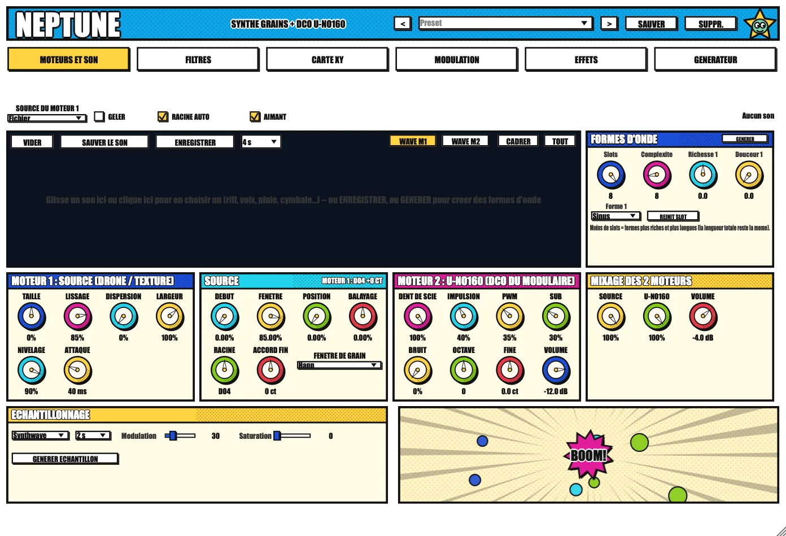

Neptune
Des leads, des basses et des nappes qui sonnent années 80, et un moteur de grains pour transformer n’importe quel son en matière à jouer.

Le son
Ce que ça change dans votre morceau
Neptune joue deux moteurs sur le même clavier. Le premier est un oscillateur numérique à la manière des synthés à puce des années 80 : scie, impulsion à largeur variable, sous-oscillateur, bruit, qu’on tord ensuite avec Warp, Fold et Wrap. Le second prend n’importe quel son (un riff, une voix, de la pluie) et le découpe en grains que vous jouez comme un instrument.
Et si vous n’avez pas de son sous la main, le moteur de grains peut écouter le premier moteur en direct : le synthé se mange lui-même, et vous pouvez figer l’instant d’un clic. Tout est relié par la même idée simple : on touche la source, on touche le réglage, on glisse pour doser.
Inspiration. Son oscillateur numérique est dans l’esprit des synthétiseurs Roland de la série Juno.
Trois points forts
Le son d’un vieux synthé
Un oscillateur numérique direct et gras, fait pour la synthwave, les basses qui poussent et les leads brillants.
Un nuage de grains jouable
Importez un fichier, enregistrez le synthé, ou écoutez-le en direct : le son devient une texture que le clavier transpose.
Quatre macros, trois LFO
Assignés d’un geste à n’importe quel réglage continu ; des arcs colorés montrent ce qui bouge.
Mode d’emploi
Comment l’utiliser
Pour un son franc, restez sur le moteur de l’oscillateur : choisissez la scie ou l’impulsion, réglez le filtre, puis ajoutez un peu de Warp pour de la voix et du relief.
Pour une texture, glissez un son dans la zone du haut. La carte XY fait muter le nuage entre quatre ambiances (drone, texture, analogique, cristal) ; le bouton GELER fige le moment que vous aimez. Le générateur de patchs propose des points de départ en Lead, Bass ou Synthwave.
Des idées pour démarrer
- Basse synthwave : scie, sub, filtre à échelle qui ferme vite, un peu de chorus.
- Intro de morceau : importez un vieux vinyle, balayez la fenêtre de lecture, gelez, jouez des accords dessus.
- Lead de drill sombre : impulsion étroite, Warp élevé, délai en fin de chaîne.
- Pad cinématographique : mode DIRECT avec le synthé en entrée du nuage de grains.
Les réglages
Ce que fait chaque réglage
- Source du moteur 1
- D’où vient la matière : un fichier, un enregistrement, des formes générées ou le moteur 2 en direct.
- Carte XY
- Déplace le nuage entre quatre ambiances : drone, texture, analogique, cristal.
- GELER
- En mode direct, fige l’instant courant : le nuage continue de jouer sur un son immobile.
- Taille / dispersion des grains
- Petits et serrés pour de la matière granuleuse, grands et étalés pour des nappes.
- Warp / Fold / Wrap
- Trois façons de tordre l’oscillateur : creux et nasal, brillant et métallique, abrasif et numérique.
- Routage des filtres
- Deux filtres à sept modèles, en série, en parallèle ou séparés.
- Macros 1 à 4
- Quatre gros potards à relier à ce que vous voulez bouger pendant la prise.
- Générateur de patchs
- Tire un patch cohérent (Lead, Bass ou Synthwave) et vous le propose.
Pour qui
Quand le sortir
Pour ceux qui aiment les sons à caractère : basses et leads de synthwave, nappes de film, textures sorties d’un sample. Et pour tous ceux qui veulent un point de départ original plutôt qu’un preset de plus.
Fiche technique
- Formats
- Audio Unit, VST3
- Système
- macOS, Apple Silicon et Intel
- Entrées / sorties
- Entrée MIDI, sortie stéréo
- Polyphonie
- 8 voix, chacune avec ses deux moteurs
- Sons importés
- WAV, AIFF, MP3, FLAC, OGG, M4A
- Latence
- Aucune
- Inspiration
- Son oscillateur numérique est dans l’esprit des synthétiseurs Roland de la série Juno.
Les noms de produits et marques cités appartiennent à leurs propriétaires respectifs ; ils sont utilisés uniquement pour décrire l’inspiration. BrickS n’est affilié à aucune de ces marques.